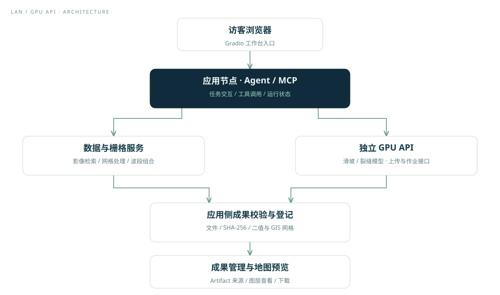
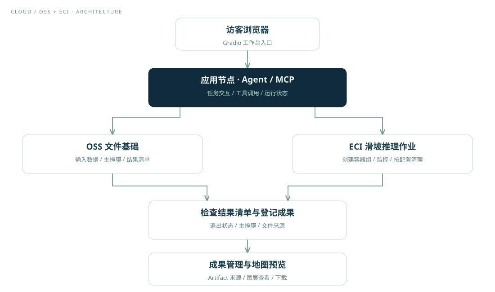
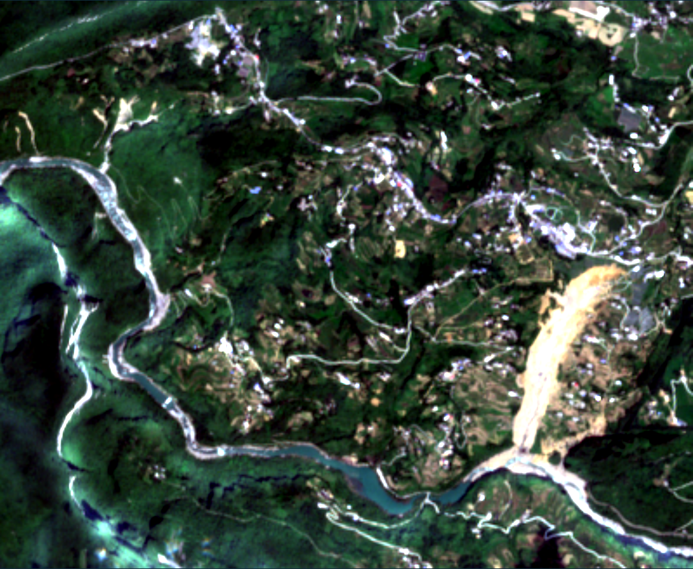
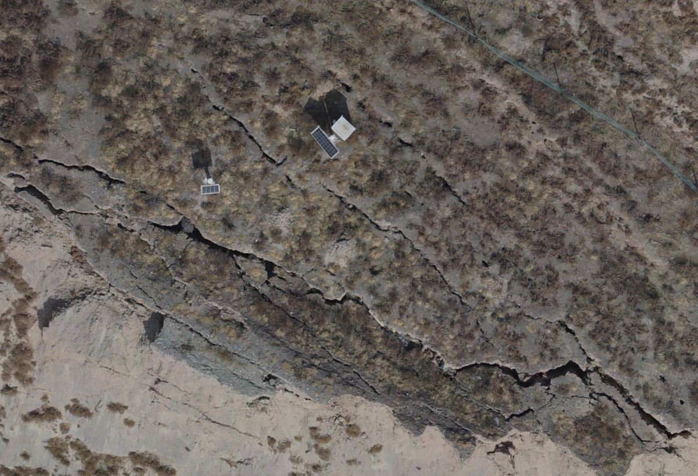
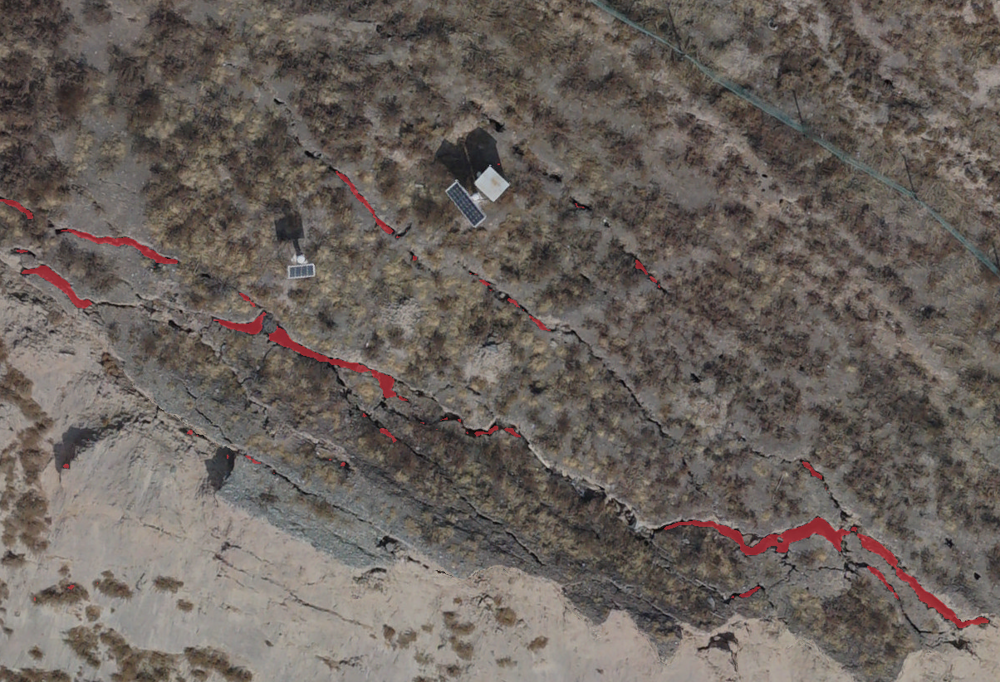

Agent 组织任务
结合任务参数、工具返回状态和历史成果，组织多步骤遥感处理。
DeepAgents · LangGraph · 流式交互AGENT-ASSISTED REMOTE SENSING
地质灾害遥感识别工作台
用自然语言组织遥感处理任务，将数据获取、栅格处理、远程模型推理与地图预览连接起来。
面向地质灾害遥感分析的工程实践
01 / THE CHALLENGE
一次遥感识别任务，往往需要在影像检索、栅格处理、模型脚本和 GIS 软件之间反复切换。参数、文件和处理结果散落在不同环节，后续复用与排查也因此变得困难。
GeoHazard Agent 通过 Agent 与 MCP 连接已有地理处理能力：围绕任务组织工具调用，以统一状态和成果引用串联步骤，再把模型输出带回地图中检查。
自然语言与结构化工具相衔接
应用节点与远程 GPU 各司其职
记录输入、处理状态及输出来源
02 / CAPABILITIES
从数据准备到结果查看，每一环都由实际工具和服务承担。以下为项目能力说明，具体工具集合依部署模式而定。
结合任务参数、工具返回状态和历史成果，组织多步骤遥感处理。
DeepAgents · LangGraph · 流式交互统一工具描述、参数和结果契约，按部署环境启用对应能力。
工具清单 · 返回状态 · 能力核对检索 Sentinel-2 影像，衔接光谱指数、地形数据与双时相栅格组合。
影像检索 · 网格对齐 · 波段组合应用节点组织任务，独立 GPU 服务执行推理；LAN 模式接入滑坡与裂缝两个模型任务。
上传 · 提交 · 轮询 · 结果接收关联运行记录与成果来源；LAN 推理结果接收后检查文件与 GIS 网格。
Artifact · SHA-256 · CRS / 网格叠加影像、矢量和候选掩膜，利用图层开关与透明度查看识别结果。
OpenLayers · 图层控制 · 成果下载INTERFACE / REAL WORKBENCH
本次长截图对应 2026-10-17 的真实历史会话：结果摘要、文件管理与地图显示在同一工作台衔接。下方提供经核对的简短执行记录。
截图已显示会话结果摘要与候选掩膜；点击可滚动查看完整界面。会话编号已遮挡。
与左侧长截图来自同一次会话，地图中可见候选掩膜及图层控制。
依据配套会话中五份工具返回整理。表中 success 是该次历史执行的记录状态，不是对当前在线服务的自动探测。
| 步骤 | 工具 | 记录状态 | 结果摘要 |
|---|---|---|---|
| 事件前影像 | retrieve_s2_terrain_data | success | 14 通道数据成果 |
| 事件后影像 | retrieve_s2_terrain_data | success | 14 通道数据成果 |
| 双时相组合 | stack_reorder_rasters | success | 26 通道组合输入 |
| 云端滑坡推理 | run_landslide_detection | success | ECI 作业 exit_code = 0 |
| 地图预览请求 | preview_geospatial_data | success | 创建候选掩膜预览；截图可见图层 |
该次组合输入为 409 × 341、26 通道。下方案例区保留此前独立 TIFF 样例，不将两组材料拼为同一次执行。
03 / ARCHITECTURE
Agent 通过 MCP 调用数据与栅格服务，再连接远程推理。结果经应用侧处理后进入成果管理与地图展示。


将任务、运行记录与成果来源关联，支持查看、复用与排查。两条路径的具体协议和检查范围分别说明。
04 / FROM REQUEST TO RESULTS
以下为根据已记录工具链整理的典型流程示意。点击步骤查看输入、处理与输出；不会启动下载或模型推理。
STEP 01 / 06
任务参数准备
流程示意 · 无后台任务执行
STEP 02 / 06
retrieve_s2_terrain_data × 2
流程示意 · 无后台任务执行
STEP 03 / 06
stack_reorder_rasters
流程示意 · 无后台任务执行
STEP 04 / 06
run_landslide_detection_lan
流程示意 · 无后台任务执行
STEP 05 / 06
成果校验 / artifact 注册
流程示意 · 无后台任务执行
STEP 06 / 06
preview_geospatial_data
流程示意 · 无后台任务执行
INPUT / MULTITEMPORAL
本例输入为哨兵二号 L2A 双时相 26 通道栅格。分别从前、后时相提取 B4 / B3 / B2 真彩色，使用相同显示拉伸参数，便于查看影像变化。
26 CHANNELS / INPUT CONTRACT
每个时相包含 10 个光谱波段、NDVI 与 SCL，再附加共享 DEM 和 SLOPE。以下编号均从 1 开始。
| 通道编号 | 分组 | 内容与顺序 |
|---|---|---|
| 1–10 | 事件前光谱波段 | B2、B3、B4、B5、B6、B7、B8、B8A、B11、B12 |
| 11 | 事件前 NDVI | NDVI |
| 12 | 事件前 SCL | 场景分类层 |
| 13–22 | 事件后光谱波段 | B2、B3、B4、B5、B6、B7、B8、B8A、B11、B12 |
| 23 | 事件后 NDVI | NDVI |
| 24 | 事件后 SCL | 场景分类层 |
| 25 | 地形 | DEM |
| 26 | 坡度 | SLOPE |
真彩色 RGB：事件前用第 3 / 2 / 1 通道；事件后用第 15 / 14 / 13 通道。B8A 包含在每个时相的 10 个光谱波段内；B1、B9 不进入该组合。
05 / CASE GALLERY
使用本次提供的原始 TIFF 与对应预测掩膜导出真实案例。拖动分界线对比输入与红色掩膜叠加；也可查看二值掩膜或放大成果。所有交互均为静态回放。

事件后真彩色候选掩膜叠加CASE A / LANDSLIDE
哨兵二号 L2A 双时相光谱、NDVI、SCL 与地形信息组成 26 通道输入。当前展示事件后真彩色与提供的滑坡候选掩膜；前后时相输入见流程区。
输入 RGB 已按地理参考重采样至结果网格用于叠加；不表示影像原始分辨率提高。原始预测掩膜未修改。
白色：原始预测值 1；黑色：背景 0。此处为显示图，不是人工标注真值。


CASE B / RGB CRACK
展示所提供 RGB 影像与其对应的裂缝预测掩膜。该案例与双时相滑坡案例分别使用自己的输入和结果，不拼接为一次执行过程。
RGB 与预测掩膜的尺寸、坐标系和空间变换一致；保留原始 RGB 显示，未作对比度拉伸或空间重采样。
白色：原始预测值 1；黑色：背景 0。此处为显示图，不是人工标注真值。
红色与白色均表示模型预测前景，不代表人工标注真值或识别精度。图像处理说明见案例图注；本页未重新运行模型。
06 / ENGINEERING
将工具参数、返回状态和成果引用连接起来，区分失败、部分成功与完成。
LAN 路径检查接收文件与地理网格，避免仅凭远程 done 状态判定交付完成。
保留运行事件、参数快照和成果来源，帮助复用、联调与问题排查。
应用侧、GPU 服务与外部数据源分别管理，以容器和接口衔接交付。
资料基准：2026-10-15。页面不以历史回归数量替代模型精度或在线稳定性证明。
07 / MY ROLE
在现有工程与团队协作基础上，主要负责 Agent 开发、MCP 工具体系接入及项目部署，具体职责如下。
EXPLORE / LIVE SERVICE
在线入口由项目本人提供，将在新窗口打开独立运行的工作台。你也可以留在本页，查看真实界面、历史执行摘要和静态案例对比。
NOTES / SCOPE
功能、成果和运行状态分别说明。
当前页面是静态项目展示。流程切换与图片放大只在浏览器本地发生；实时推理须进入独立部署的服务。
LAN 路径通过远程 GPU API 提交任务，支持滑坡与裂缝预设；OSS + ECI 路径通过云端容器作业执行滑坡推理。两种路径的工具集合、协议与验收状态分别说明。
模型输出属于候选识别成果，需要专业人员复核。本页不提供统一测试集上的精度结论，也不将界面截图或测试数量作为模型性能证明。
红色来自所提供结果中像素值为 1 的区域，仅调整显示颜色与透明度。滑坡前后时相使用一致的真彩色拉伸；由于滑坡输入与结果原始网格不同，仅对 RGB 做地理配准重采样。裂缝 RGB 与掩膜网格一致，直接叠加。未对预测掩膜进行平滑、膨胀、腐蚀或补画。